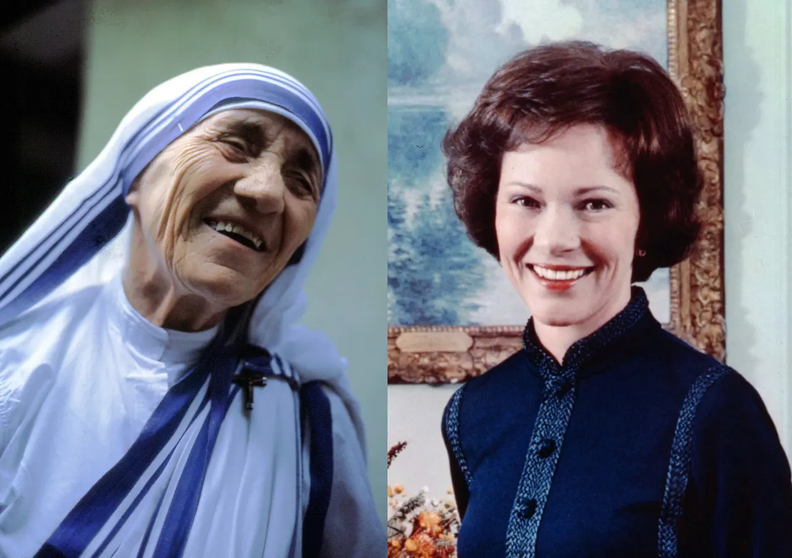

Her Nobel Peace Prize speech, 1979 - the small, unbending voice, with English subtitles (about 20 minutes). Watch on YouTube.
St. Teresa of Calcutta
An Albanian schoolteacher who heard, on a train into the mountains, what she called a call within a call - and obeyed it so completely that the whole world came to know her by one word: Mother. She picked the dying out of the gutters of Calcutta for fifty years, won the Nobel Peace Prize, and carried, hidden, a decades-long darkness of her own. She is a canonized saint. This page is her story, her own words, and where to hear her.

At a Glance
Who: Mother Teresa - born Anjezë Gonxhe Bojaxhiu (1910-1997), foundress of the Missionaries of Charity.
Known for: fifty years among the poorest of the poor in Calcutta - the home for the dying, the orphanages, the leprosy work; the 1979 Nobel Peace Prize; the white sari with the blue border, worn by thousands of sisters in over a hundred countries today.
Status: canonized Saint on September 4, 2016, by Pope Francis. Her feast day is September 5, the day she died.
The miracle for her canonization: the healing of Marcilio Haddad Andrino in Brazil from multiple brain abscesses in 2008, recognized as miraculous through her intercession. Andrino and his wife were present at her canonization.
Her Life (1910-1997)
She was born Anjezë - Agnes - Gonxhe Bojaxhiu on August 26, 1910, in Skopje, then in the Ottoman Empire, now the capital of North Macedonia, to an Albanian family. Her father died when she was eight; her mother raised three children on faith and plain generosity - "My child, never eat a single mouthful unless you are sharing it with others." At eighteen she left home forever to join the Loreto Sisters, hoping for the missions; she learned English in Ireland and landed in India in 1929, taking the name Sister Mary Teresa, after Thérèse of Lisieux. For nearly twenty years she taught at St. Mary's High School in Calcutta and became its principal - happy, effective, settled.
Then came September 10, 1946. On the train to her annual retreat in Darjeeling, she experienced what she would only call "a call within a call": leave the convent, go into the slums, and serve Christ in the poorest of the poor. It took two years to receive permission. In 1948 she stepped out of the Loreto convent in a white cotton sari with a blue border - the poor man's cloth - with five rupees and no plan but the call. She started a school for slum children under a tree, scratching letters in the dirt.
In 1950 the Church recognized her new congregation, the Missionaries of Charity, vowed to give "wholehearted free service to the poorest of the poor." In 1952 she opened Nirmal Hriday - Pure Heart - the home for the dying in a former Kali temple, so that people found on the pavement could die, as she said, "in the arms of somebody who loves them." Orphanages, leprosy clinics, mobile dispensaries, AIDS hospices followed; the sisters spread across India, then the world. When she died on September 5, 1997, India gave her a state funeral. The order she began with twelve sisters counts thousands today, in more than a hundred countries.
The Nobel - and the Darkness

In 1979 she received the Nobel Peace Prize. She accepted it, she said, "in the name of the poor," asked that the celebration banquet's cost be given to the hungry instead, and used the world's biggest stage to say the same small things she always said: peace begins with a smile, and love begins at home.
What the world did not know until her private letters were published in 2007 (Come Be My Light): for nearly fifty of those years she lived in an interior darkness - a felt absence of God so deep she wondered at times if anyone heard her at all. She radiated Jesus to everyone and felt nothing herself. Honest pages should not hide this, because it is not her shame - it is part of her witness. Faith, her life says, is not a feeling; it is fidelity. She kept showing up. If your own prayer feels empty, she has been there before you, longer than you, and she stayed.
Her Teaching, in Her Own Words
"Works of love are works of peace." From her 1979 Nobel address - her whole program in five words. She did not run campaigns; she ran a home for the dying, and she insisted that is what peacemaking looks like.
"Not all of us can do great things. But we can do small things with great love." From her published words. The sentence that made holiness reachable: you cannot do what she did - so do what is in front of you, the way she did it.
"The fruit of silence is prayer, the fruit of prayer is faith, the fruit of faith is love, the fruit of love is service, the fruit of service is peace." Her ladder, rung by rung - and notice it begins in silence, not in action. The sisters still keep a daily holy hour before the tabernacle; the service comes after.
"What can you do to promote world peace? Go home and love your family." Her answer when reporters asked. Following her way needs no plane ticket to Calcutta: daily prayer, then the person in front of you - beginning with the people under your own roof.
Watch: St. Teresa of Calcutta
Video hosted on YouTube by their channels - not produced by this site. Each embed uses youtube-nocookie.com (no YouTube cookies unless you press play) and was verified playable before embedding.
The Inspiring Life of Saint Mother Teresa - a short documentary portrait of her life and work (about 14 minutes). Watch on YouTube.
Frequently Asked Questions
Is Mother Teresa a saint?
Yes. Pope Francis canonized her on September 4, 2016, in Saint Peter's Square - Saint Teresa of Calcutta. "Mother" is what the world will keep calling her; Pope Francis said as much at the canonization. But her formal title is Saint.
What miracles were recognized for her?
For beatification, the Church recognized the healing of Monica Besra in 1998; for canonization, the healing of Marcilio Haddad Andrino of Brazil from multiple brain abscesses in 2008, after his wife prayed for Mother Teresa's intercession. Both passed the Church's full medical and theological examination.
Did she write "Do It Anyway"?
No - and honest pages should say so. The poem is adapted from Kent Keith's "Paradoxical Commandments" (1968); a version hung on the wall of her Calcutta orphanage, which is how it came to be attributed to her. Her verified words are the ones quoted above.
When is her feast day?
September 5, the anniversary of her death in 1997.
Where is she buried?
At the Mother House of the Missionaries of Charity in Kolkata (Calcutta), where her tomb receives visitors daily.
What was her darkness?
Private letters published after her death (Come Be My Light, 2007) show that for decades she felt no consolation of God's presence - while continuing to serve him joyfully. The Church read this not as failed faith but as a share in the night of the mystics: love proved by fidelity, not by feeling.
Sources
- The Holy See: homily of Pope Francis at the canonization of Mother Teresa (September 4, 2016) - the declaration, her life, and the "Mother Teresa" name
- The Nobel Prize: Mother Teresa's Nobel Lecture (1979) - her own words at the podium
- Mother Teresa, A Simple Path (1995) and Come Be My Light (2007) - her published words and letters (print)
- Wikimedia Commons: the photographs on this page, each Creative Commons or public-domain, credited in its caption